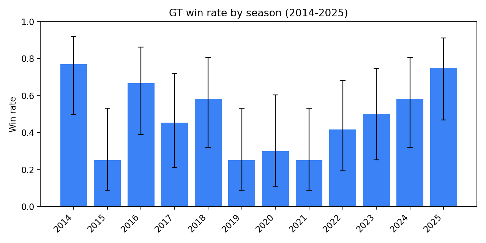
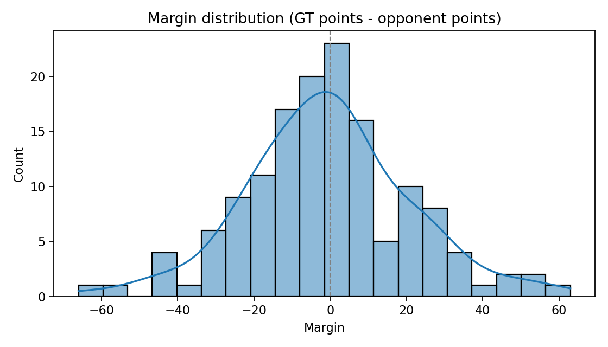
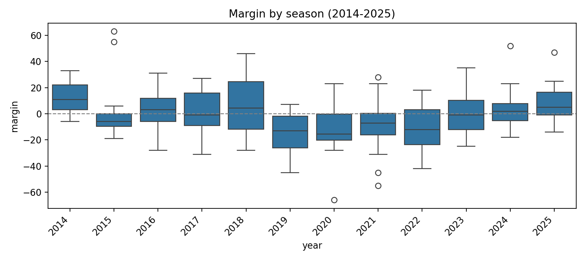
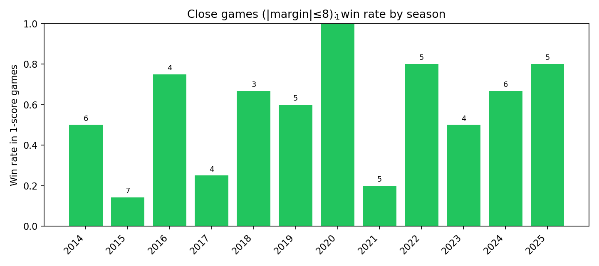
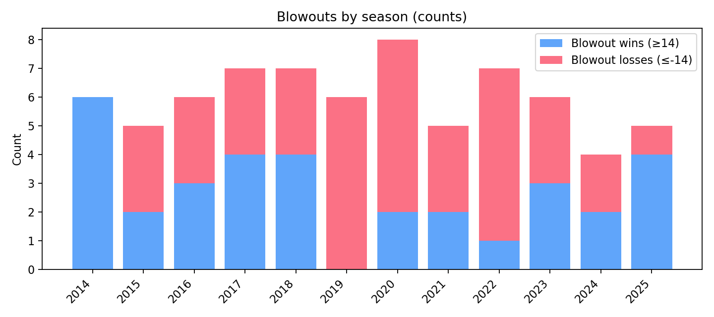
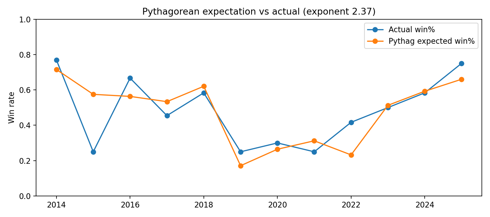
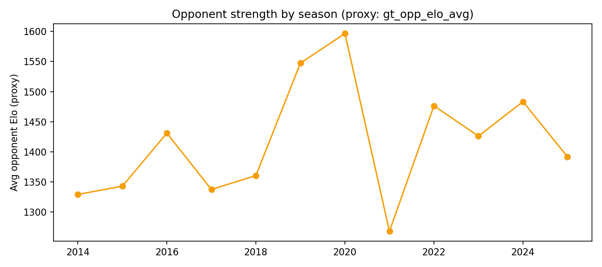
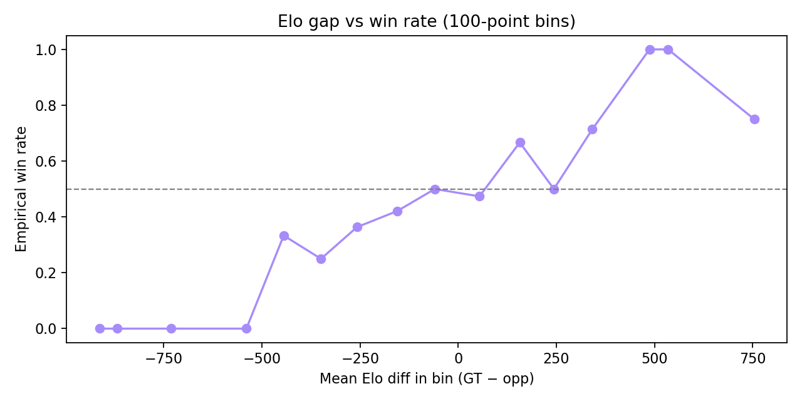

GT
Georgia Tech: 2014–2025 Summary Dashboard
Generated from reports/gt_summary_2014_2025/metrics.json and reports/gt_summary_2014_2025/yearly.csv
Regular season • GT colors
Key Takeaways
Record
Why this matters
What you’re looking at: the wins and losses across 2014–2025.
Why it’s impactful: a record is the quickest way to summarize a team, but it doesn’t tell you how “certain” that number is. The win-rate confidence interval is the dashboard’s way of showing the “wiggle room” around the record: with this many games, GT’s true long-run win rate could reasonably be a bit higher or a bit lower. That’s important when you’re comparing eras or trying to draw conclusions from a limited number of games.
Why it’s impactful: a record is the quickest way to summarize a team, but it doesn’t tell you how “certain” that number is. The win-rate confidence interval is the dashboard’s way of showing the “wiggle room” around the record: with this many games, GT’s true long-run win rate could reasonably be a bit higher or a bit lower. That’s important when you’re comparing eras or trying to draw conclusions from a limited number of games.
What it shows here
GT goes 69–73 from 2014–2025 (regular season), which is a 48.6% win rate.
The 95% confidence range (40.5%–56.7%) means you should describe this stretch as “roughly a .500 team overall,” not “exactly 48.6%.” The range is wide because even 142 games still includes a lot of randomness (close games, injuries, schedule swings).
The 95% confidence range (40.5%–56.7%) means you should describe this stretch as “roughly a .500 team overall,” not “exactly 48.6%.” The range is wide because even 142 games still includes a lot of randomness (close games, injuries, schedule swings).
Average Margin
Margin is GT points − opponent points (regular season only).
Why this matters
What you’re looking at: average points per game GT outscored (or got outscored by) opponents.
Why it’s impactful: margin adds context to the record. Two 7–5 seasons can feel totally different: one might be lots of tight wins and tight losses, while another is a few blowouts that swing the average. The confidence interval reminds you the “average margin” can be pulled around by a handful of extreme games.
Why it’s impactful: margin adds context to the record. Two 7–5 seasons can feel totally different: one might be lots of tight wins and tight losses, while another is a few blowouts that swing the average. The confidence interval reminds you the “average margin” can be pulled around by a handful of extreme games.
What it shows here
The average margin is −0.58 points/game.
The uncertainty range (−3.99 to +3.01) crosses 0, which means this whole era is consistent with: “GT was slightly outscored,” “GT slightly outscored opponents,” or “basically even overall.” In plain terms: this era has a lot of competitive football mixed with some swing years.
The uncertainty range (−3.99 to +3.01) crosses 0, which means this whole era is consistent with: “GT was slightly outscored,” “GT slightly outscored opponents,” or “basically even overall.” In plain terms: this era has a lot of competitive football mixed with some swing years.
Home / Away / Neutral
Why this matters
What you’re looking at: win rates depending on where the game is played.
Why it’s impactful: home field can matter (travel, crowd noise, routine). If home and away are truly different, that’s useful for prediction and for understanding a season. But neutral-site games are rare, so those numbers are naturally less reliable. If the “home minus away” range includes 0, it means we can’t say with high confidence that home field is the reason for the difference (even if the point estimate looks big).
Why it’s impactful: home field can matter (travel, crowd noise, routine). If home and away are truly different, that’s useful for prediction and for understanding a season. But neutral-site games are rare, so those numbers are naturally less reliable. If the “home minus away” range includes 0, it means we can’t say with high confidence that home field is the reason for the difference (even if the point estimate looks big).
What it shows here
The point estimates show a home boost (home 57.5% vs away 40.0%).
But the “home minus away” uncertainty range includes 0, so the best takeaway is: home probably helps, but this sample can’t pin down the exact size. Some of the gap could be who GT happened to play at home vs on the road, plus normal football randomness.
But the “home minus away” uncertainty range includes 0, so the best takeaway is: home probably helps, but this sample can’t pin down the exact size. Some of the gap could be who GT happened to play at home vs on the road, plus normal football randomness.
Home-Field Effect (Regression Estimate)
Estimated home boost (points)
Estimated home boost (win%) when teams are “even”
What you’re looking at
This is a simple regression that tries to separate “GT is the better team” from “GT is playing at home.”
It uses only non-neutral games and controls for a strength signal (Elo gap).
In plain English: it estimates how many points (and how much win probability) GT gains from being at home, after accounting for the strength of the opponent.
In plain English: it estimates how many points (and how much win probability) GT gains from being at home, after accounting for the strength of the opponent.
How to interpret it
The confidence interval can be wide. If it includes 0, it means the data doesn’t strongly pin down the home advantage in this sample.
That doesn’t mean “home field is fake” — it means we’re not certain about the exact size from these games alone.
Win Rate by Season (with CI band)
Band is Wilson 95% CI for each season’s win rate.
Interactive charts require an internet connection to load Chart.js. If offline, see the static PNGs below.
Why this matters
What you’re looking at: each season’s win rate, plus an uncertainty “band.”
Why it’s impactful: college football seasons are short (~12 games), so a 2-game swing can change the story a lot. The band helps you avoid overreacting to a single season and helps you compare seasons more fairly.
Why it’s impactful: college football seasons are short (~12 games), so a 2-game swing can change the story a lot. The band helps you avoid overreacting to a single season and helps you compare seasons more fairly.
What it shows here
You can see big swings by year. In this dataset, 2014 and 2025 are strong by win rate, and 2019–2022 include multiple down seasons.
The key point is the uncertainty: because each season is small, some of the “ups and downs” are real and some are just a few close games going one way or the other.
The key point is the uncertainty: because each season is small, some of the “ups and downs” are real and some are just a few close games going one way or the other.
Yearly Table
Why this matters
What you’re looking at: the exact stats for each season in one place.
Why it’s impactful: fans often remember records, but margin helps explain whether a season felt “solid” or “fragile.” A team can be 7–5 with a strong margin (consistently good) or 7–5 with a weak margin (living on the edge).
Why it’s impactful: fans often remember records, but margin helps explain whether a season felt “solid” or “fragile.” A team can be 7–5 with a strong margin (consistently good) or 7–5 with a weak margin (living on the edge).
What it shows here
You can point to concrete examples: 2019 combines a low win rate with a very negative margin, while 2024–2025 show improvement on both.
This is a good way to explain to someone that “record alone doesn’t tell the full story.”
This is a good way to explain to someone that “record alone doesn’t tell the full story.”
Static Visualizations

Win rate by year

Margin distribution

Margin by year
Why this matters
What you’re looking at: pictures of how GT’s games “looked” on the scoreboard.
Why it’s impactful: the margin histogram shows if GT played lots of nail-biters (many games near 0) or lots of clear wins/losses (more spread out). Margin by year shows whether certain seasons were consistently strong/weak on the scoreboard.
Why it’s impactful: the margin histogram shows if GT played lots of nail-biters (many games near 0) or lots of clear wins/losses (more spread out). Margin by year shows whether certain seasons were consistently strong/weak on the scoreboard.
What it shows here
Use Margin distribution to talk about how often games were close, and Margin by year to highlight seasons where GT consistently outscored opponents (or got outscored).
2025: Model vs ESPN FPI (Win Probability)
This table compares your model’s win probability against ESPN’s FPI win probability (as reported in the Sports Illustrated article you shared). The key column is Δ (model − FPI).
Why this matters
What you’re looking at: where your model disagrees with a widely used public baseline (FPI).
Why it’s impactful: if your model always matches FPI, it’s not adding much new information. The biggest deltas are the games where your model “took a stand” and you can explain why.
Why it’s impactful: if your model always matches FPI, it’s not adding much new information. The biggest deltas are the games where your model “took a stand” and you can explain why.
How accurate is it?
Bottom line: treat this as a useful check, not a final verdict.
Why: it’s only one season, and “who wins” has a lot of randomness in college football. If your model has lower Brier score than FPI here, that’s a good sign — just frame it as: “Interesting in a small sample” rather than “we beat ESPN.”
Why: it’s only one season, and “who wins” has a lot of randomness in college football. If your model has lower Brier score than FPI here, that’s a good sign — just frame it as: “Interesting in a small sample” rather than “we beat ESPN.”
Extra Analysis (2014–2025)
These use only GT’s historical game outcomes and scoring margins to add context beyond W/L.

Close games (|margin|≤8) win rate by year
Why this matters
Close games are the biggest source of “football randomness.”
If you win a lot of one-score games, your record can look great even if you weren’t dominant. If you lose them, the opposite happens.
This chart helps separate “record” from “how the season felt on the field.”
What it shows here

Blowouts by year (wins ≥14, losses ≤−14)
Why this matters
Blowouts are “high-confidence” games: if you win by 14+ you were probably the better team that day; if you lose by 14+ you were likely outmatched.
Seeing these counts by year helps explain whether GT was consistently competitive or consistently overpowered in a season.
What it shows here

Pythagorean expectation vs actual win%
Why this matters
Pythagorean expectation is a classic sports stat: it turns points scored and allowed into an “expected win%.”
Think of it as: “If you keep scoring and allowing points at this rate, what record would you normally get?”
It’s a great check for “better than record” or “worse than record” seasons.
What it shows here

Strength of schedule proxy by year
Why this matters
A 7–5 season against a tough schedule isn’t the same as a 7–5 season against an easier one.
This is a rough “schedule strength” proxy using opponent strength (Elo-style). It helps you add context when comparing seasons.
What it shows here

Elo gap vs empirical win rate (binned)
Why this matters
This is a “does strength matter?” chart.
If GT’s Elo is much higher than the opponent’s, GT should win more often; if it’s much lower, GT should win less often.
If the curve doesn’t generally rise, then Elo isn’t explaining outcomes well (or the sample is too small/noisy in some ranges).
What it shows here
Extras table
Why this matters
This table gives exact values behind the extra plots (close-game win%, blowout counts, Pythag expected win%, schedule proxy).
Tip: Open this file in a browser. If your browser blocks local JS imports, the page still shows the static PNGs.